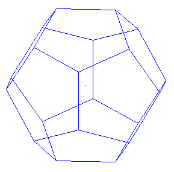
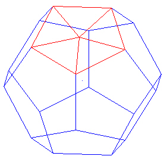
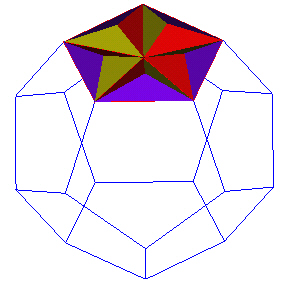
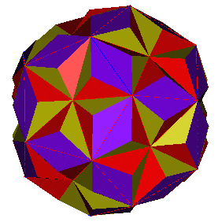
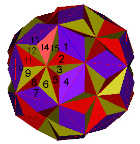

11-10-2001: Update: Looks like the Jitterbug motion may be a better way to define the 180 Polyhedron. Click here to see how the Jittebugs can be used to define a 180 Polyhedron. Actually, the 2 approaches can give the same 180 Polyhedron, depending on where we define the new vertices and depending on how much we allow the Jitterbugs to rotate.
We start with the regular Dodecahedron.
|  |
| Regular Dodecahedron. |
Divide the pentagon surface into 5 triangles.
|  |
| 5 Triangles in the pentagon face. |
Each of the 5 new triangles are considered to be the base triangle of an irregular Tetrahedron.
Puting 5 irregular Tetrahedra on a face of the Dodecahedron looks like this.
|  |
| Irregular Tetrahedra add to a face. |
Finally, we cover the entire Dodecahedron.
|  |
| A 180 Triangular faced polyhedron. |
Let us count to make sure....
|  |
| Middle of Rotations. |
For each of the pentagon faces of the regular Dodecahedron, we have added 15 triangular faces.
There are 12 such pentagon faces. This gives a total of
triangular faces.
At this time, it is not know exactly what the irregular Tetrahedra should look like. So what has been shown here is only one possibility.
Here is a VRML model of this 180 Polyhedron.
Usage Note: My work is copyrighted. You may use my work but you may not include my work, or parts of it, in any for-profit project without my consent.